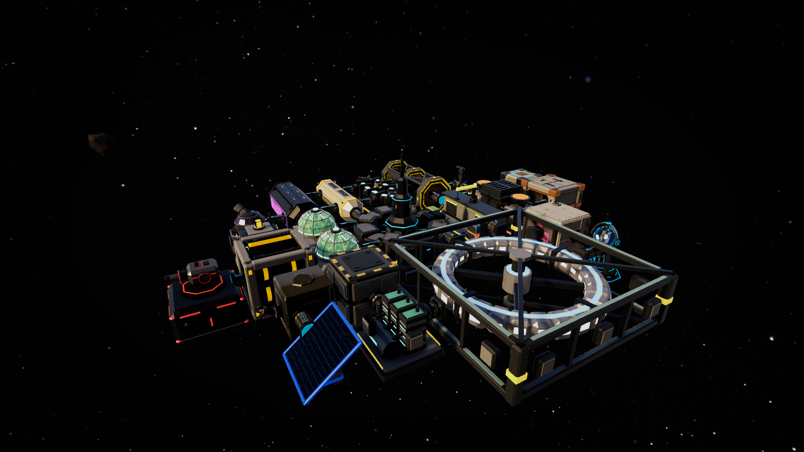
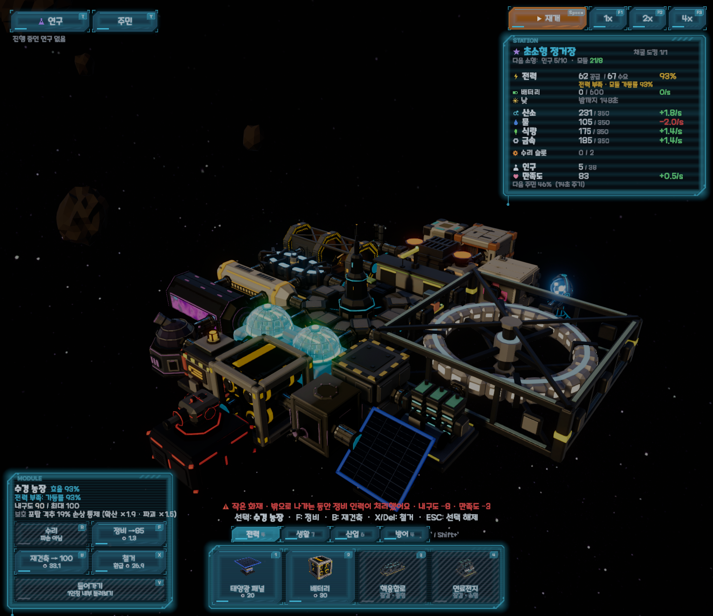
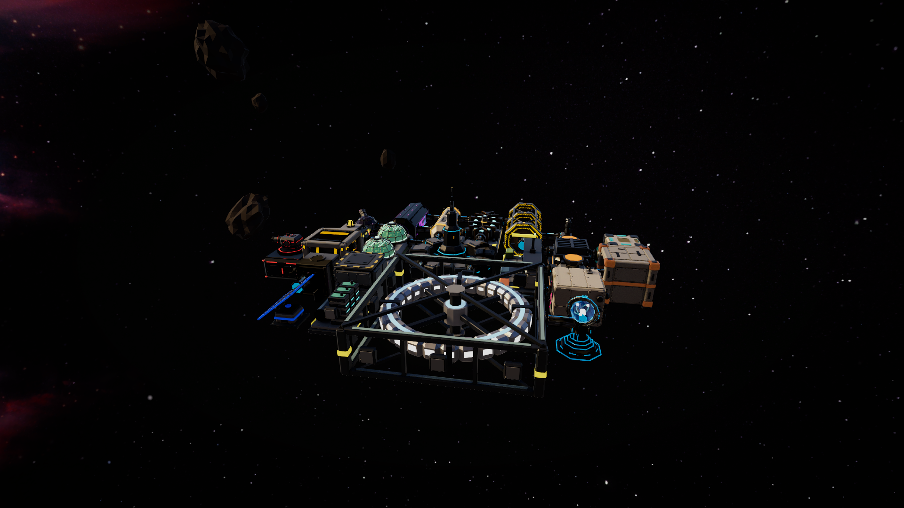
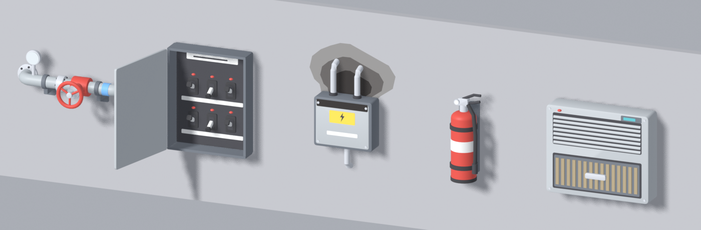
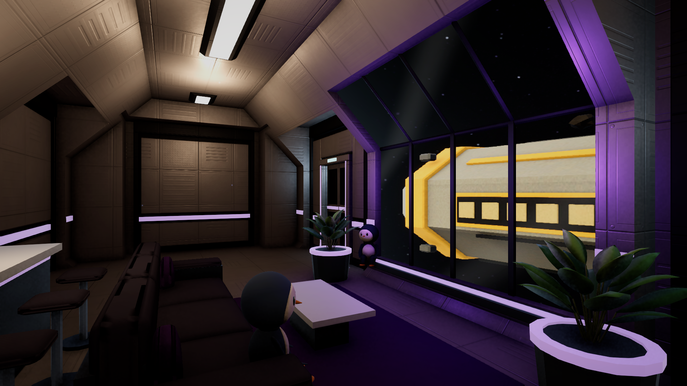
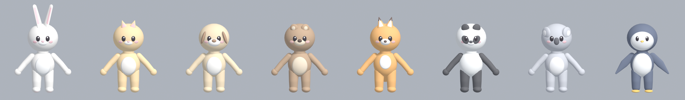
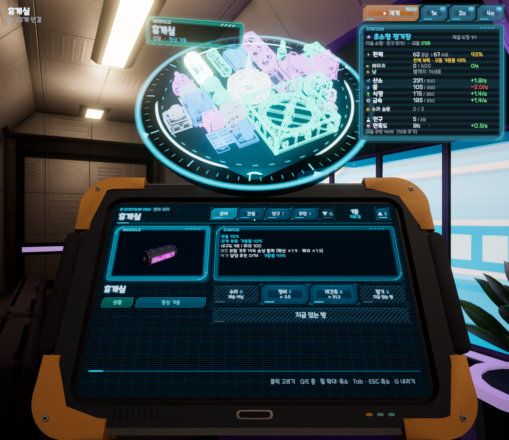
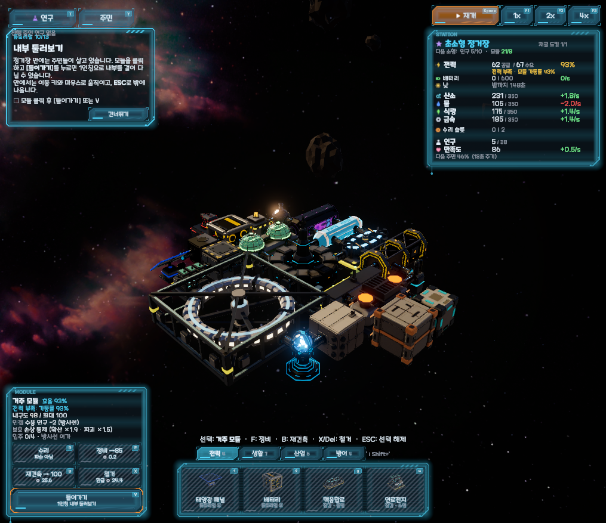
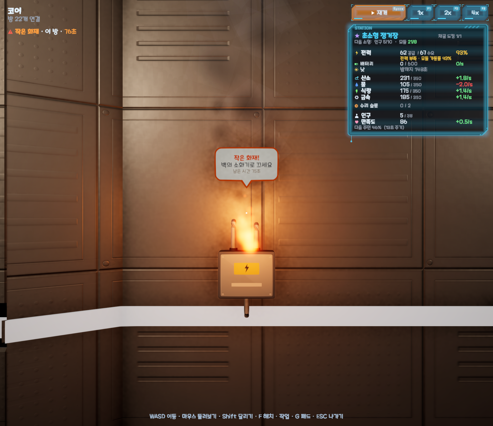
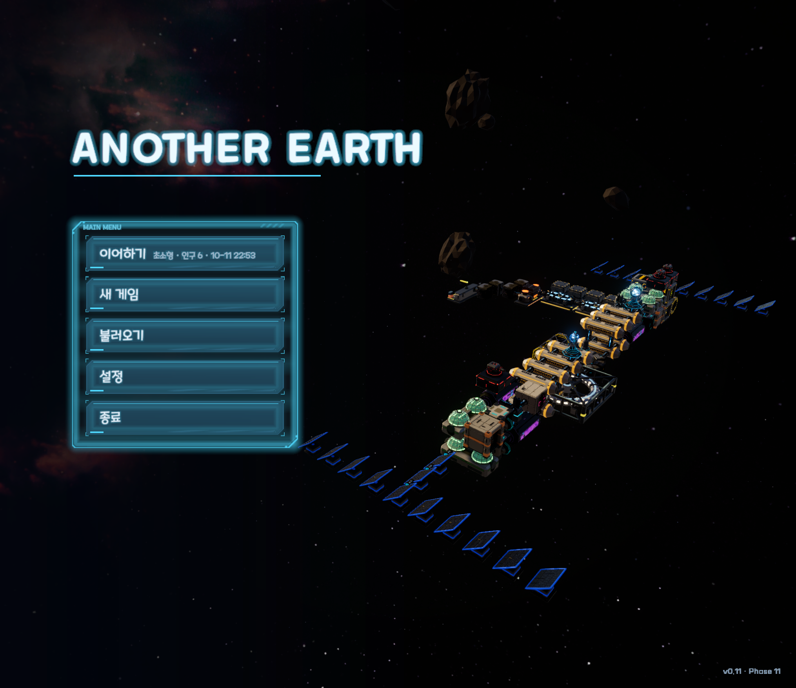

자원 확인 → 모듈 배치 → 생산·소비 균형 → 인구 증가 → 더 큰 수요 → 이벤트 → 대응
StationGrid + 첫 테스트 13개 · 모듈 데이터를 ScriptableObject로 · 궤도 카메라 · 초록/빨강 고스트 배치 · 철거수치는 전부 여기 + BALANCE.md. 코드에 숫자를 쓰지 않는다
1초 고정 틱으로만 계산 · 시스템끼리는 C# event로 느슨하게
상태 표현은 머티리얼 교체 대신 셰이더 값 조절
Vector3Int 격자, 점유 정보는 한 곳에서만| 문서 | 역할 |
|---|---|
| CLAUDE.md | 작업 원칙 · 코딩 규칙 · 바꾸지 않는 설계 규칙 (AI가 매번 먼저 읽음) |
| GDD.md | 게임 기획 (핵심 루프 · 시스템 · 모듈) |
| TASKS.md | 작업 순서 + 항목마다 "결정 (날짜)" · 구현 · 확인 결과 (약 1,100줄) |
| BALANCE.md | 모든 수치와 봇 측정 기록 |
| MODELING.md | Blender 모델링 체크리스트 (겪은 문제를 규칙으로) |
| 시점 | 결과 |
|---|---|
| 기준선 (Phase 4 전) | 대형 평균 13.3분 · 위기 · 파괴 0회 |
| 4-10 노멀 적용 | 대형 10/20 (45.2분) · 게임 오버 15% |
| 8-6 재조정 (G1안) | 초대형 14/20 (72.6분) · 게임 오버 15% |
| 10 거주자 특성 | 대형 11 → 18/20 · 인구 56 → 103 |
| 11-18 첫 30분 | 이지 게임 오버 0/20 · 노멀 1/20 |
모듈마다 "포트"를 두고 포트끼리만 연결하는 B안을 검토했다.
더 전략적이지만 배치 규칙 · 통로 · 모델 · 봇 · 밸런스가 전부 바뀐다.
IConnectionRule 인터페이스 뒤에 둠
결과검토 · 폐기를 해도 다른 시스템은 흔들리지 않음


→ 검사 도구도 틀릴 수 있고, 맞는 숫자도 재미없을 수 있다. 측정과 플레이 둘 다 필요




개편된 튜토리얼 카드 (13단계 중 10단계 "내부 둘러보기")

왼쪽 위: 방 이름 아래 "▲ 작은 화재 · 이 방 · 76초"가 사고가 끝날 때까지 남는다
FontCoverageTests 추가
결과이제 없는 글자를 쓰면 테스트가 실패
Blender 모델링도 겪은 문제를 MODELING.md 체크리스트로 쌓고, 내보내기 전후 겹침 · 뚫림 검사를 매번 돌림 (템플릿마다 2,000~7,600장 렌더)
→ "무엇을 만들지 · 좋은지"는 사람이, "어떻게 만들고 · 맞는지"는 AI가
그레이박스로 플레이해 보고, 재미가 없으면 측정 도구부터
방향은 사람이 고르고, 반복 작업 · 측정은 AI에게
봇 · 프레임 · 픽셀로 판단하되, 체감이 다르면 설계를 바꾼다
인터페이스 · 에디터 메뉴로 재생성 · 작업 단위 커밋
그리고: 문서(CLAUDE · TASKS · BALANCE · MODELING)가 대화를 넘어 맥락을 이어 준다
